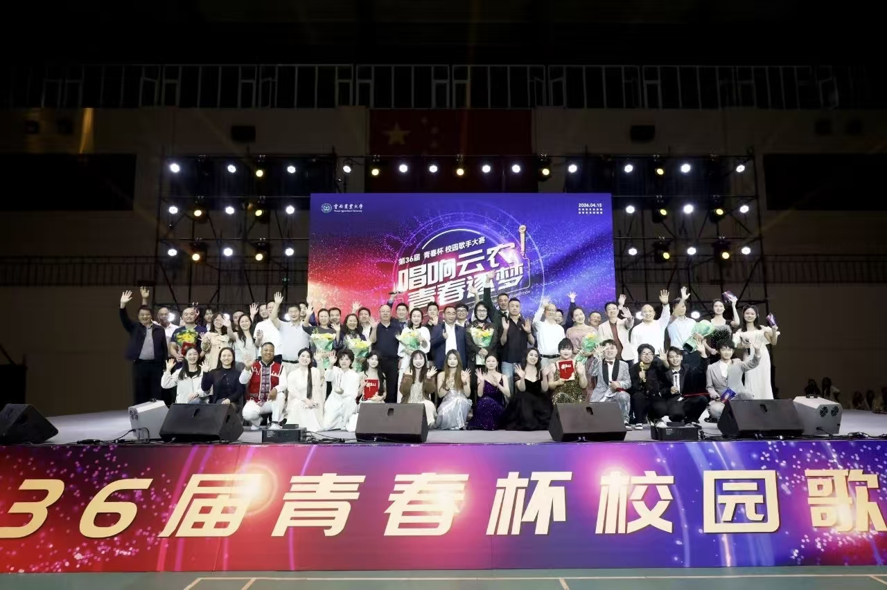
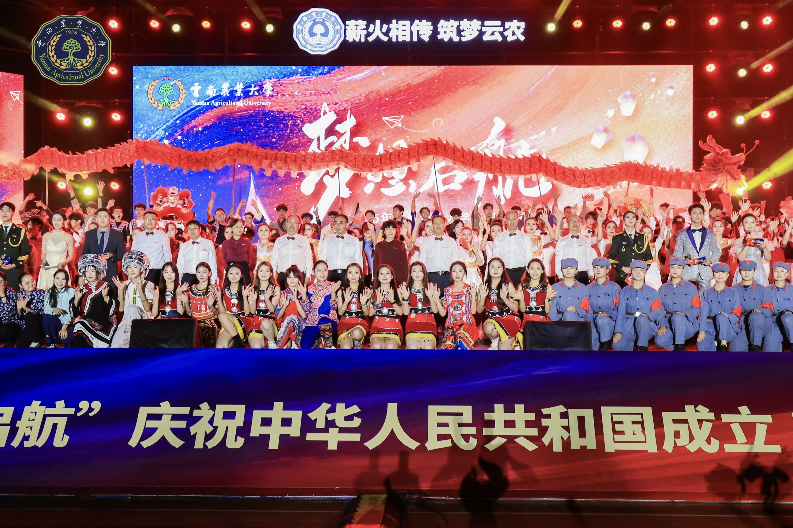
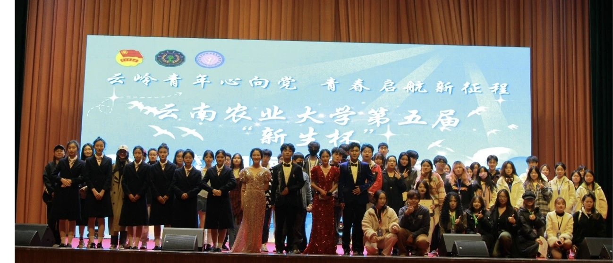
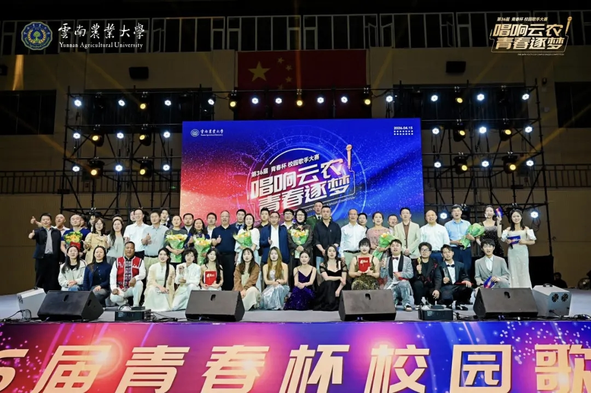
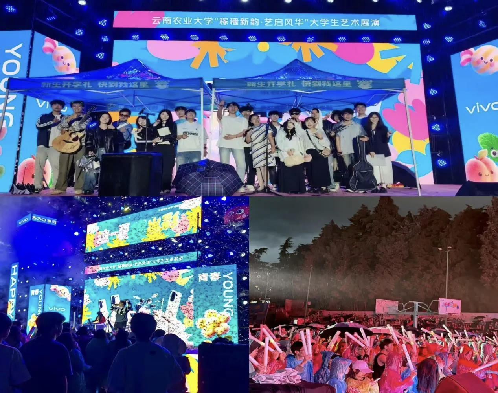
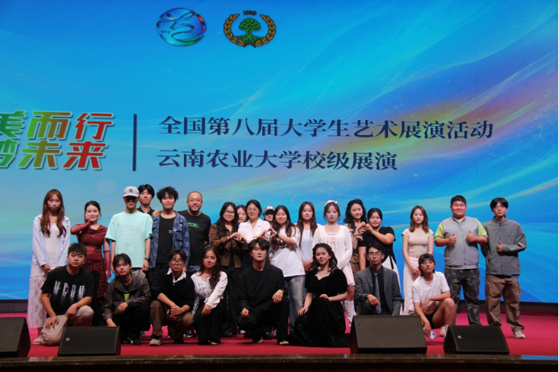
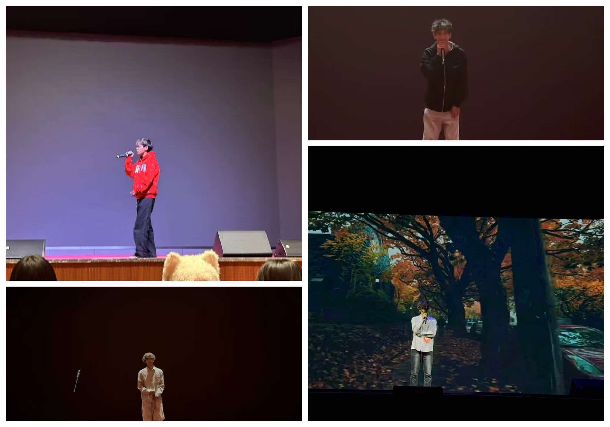

流行演唱部
主攻通俗流行唱法，开展练声、曲目排练、合唱编排，承接晚会流行类歌唱节目。

01 / 社团简介
云南农业大学学生艺术团声乐队，依托校高水平艺术团美育体系建立，伴随艺术团发展逐步独立建制，是校级重点文艺学生团体。社团下设流行音乐部、说唱部两大特色分部，以丰富校园文化生活、提升学生声乐艺术素养为宗旨，面向全校声乐爱好者开展日常发声训练、乐理学习、独唱与小组合唱排练。
日常承担迎新晚会、毕业晚会、新年音乐会、校园十佳歌手大赛等校级重大文艺演出，同时参与校园星空快闪、社区文化节、省级大学生艺术展演等校内外交流活动。社团融合云南本土民族音乐特色，兼顾国风经典、流行演唱、原创说唱等多元作品演绎，形成兼具青春活力与民族韵味的表演风格。现有稳定成员数名，实行规范化招新与换届传承机制。未来社团将持续深耕声乐艺术实践，打造校园特色文艺品牌，为热爱歌唱、说唱的同学搭建展示自我、交流成长的平台，助力校园美育文化建设。
02 / 部门组成
流行演唱与说唱并行，兼顾经典国风与原创表达。
主攻通俗流行唱法，开展练声、曲目排练、合唱编排，承接晚会流行类歌唱节目。
教授说唱节奏、押韵、台风技巧，完成说唱节目编排、原创创作及各类舞台演出任务。
03 / 精彩瞬间
每一次登台，都是热爱与歌声交汇的瞬间。






04 / 精彩活动
日常训练与舞台实践并存，用歌声连接校园与青春。
01
“梦想启航”迎新生晚会于东校区田径场举办，献礼建国76周年。由艺术团承办，原创歌舞、话剧、器乐等红色与耕读主题节目，万名新生师生到场观演，展现校园美育风采，迎接新生逐梦启航。
查看新闻报道02
展现青春风采、点燃艺术梦想！云南农业大学“新生杯歌舞大赛”是一个专为热爱舞蹈与音乐的新生同学打造的舞台——无论是钟情于街舞的酷炫、古典的优雅，还是沉醉于流行的旋律、说唱的节奏，这里都期待同学的精彩绽放！
查看新闻报道03
本届“青春杯”由艺术团承办，通过师生同台、大众评审、权威献艺、分贝仪决战等一系列创新举措，为全校师生搭建了展示自我、绽放风采的艺术平台，进一步丰富了校园文化生活。
查看新闻报道04
云南农业大学大学生艺术展演声乐专场，以歌声传递青春风采，展现云农学子艺术素养与精神风貌。多样曲风唱响校园，用旋律抒发热爱，为师生搭建声乐交流展示平台，丰富校园文化生活。
查看新闻报道